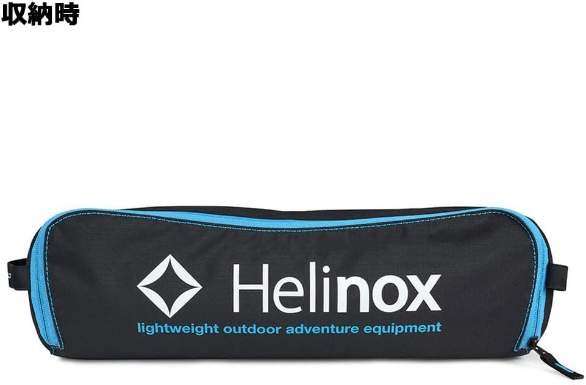

キャンプ用の折りたたみチェアを探し始めると、必ず名前が挙がるのがヘリノックスだ。ただ、いざ買おうとするとチェアワン、チェアツー、タクティカル、さらにはコットやテーブルまでラインナップが広く、「どれが自分に合うのか」「安いコピー品とは何が違うのか」で手が止まりやすい。せっかく定番を選ぶなら、失敗せずに一脚目を決めたい。
この記事では、ハイバック仕様の ヘリノックス チェアツー（型番1822284） を軸に、ヘリノックスというブランドの魅力、人気モデルの違い、チェアワンとの比較、そして偽物の見分け方までを整理する。TechSnapは実機を計測していないため、ここでの内容はヘリノックスが公開している公式スペックと公表情報にもとづく客観的なヘリノックス レビューであり、使用感を断定するものではない点は先に断っておきたい。それでも、公式情報を並べて用途に落とし込めば、購入前に確認すべきポイントは十分に見えてくる。
ヘリノックスの魅力はどこにあるのか
ヘリノックス（Helinox）は、テントポールなどのアルミ合金加工で世界的に知られる韓国のDAC社が2009年に立ち上げたアウトドアブランドだ。最大の特徴は、強度と軽さを両立したDAC製アルミ合金ポールを骨格に使っている点にある。軽量・コンパクトに畳めるのに、体を預けてもたわみにくい剛性感があり、その完成度の高さがヘリノックスの魅力として長く支持されてきた。
ヘリノックス チェアは、ポールをテントのように組み立て、座面の生地を四隅に引っ掛けるだけで完成する構造だ。収納袋に入れれば手荷物のように持ち運べるサイズにまとまり、車のトランクの隙間や玄関先にも置いておける。この「軽さ・小ささ・座り心地」のバランスが、他ブランドがこぞって模倣するほどの評価につながっている。
人気モデルはどれか
ラインナップの中で人気モデルの中心にあるのは、原点であるチェアワンと、その系譜のチェアツー、そしてミリタリーテイストのタクティカルシリーズだ。加えて、簡易ベッドになるコット類、軽量テーブル類まで揃い、チェア・コット・テーブルを同じ世界観で揃えられるのも支持される理由になっている。今回のチェアツーは、チェアワンの座り心地はそのままに、背もたれを頭まで伸ばしたハイバック版という位置づけだ。

チェアツー（1822284）の主要スペック
ヘリノックスが公表しているチェアツーの値をまとめる。サイズ・重量は測定方法や環境により多少前後する目安値だ。
| ブランド | Helinox（ヘリノックス） |
|---|---|
| 製品名・型番 | チェアツー（1822284／ブラック） |
| 種類 | 折りたたみアウトドアチェア（ハイバック） |
| 使用時サイズ | 幅54.5×奥行64×高さ84cm |
| 収納時サイズ | 約 幅44×奥行13×高さ11cm（目安） |
| 座面高 | 34cm |
| 重量 | 使用時 約1.12kg（収納袋込み 約1.2kg） |
| 耐荷重 | 145kg |
| フレーム素材 | DAC製アルミ合金＋樹脂ハブ |
| 座面素材 | ポリエステル |
| 付属品 | 収納袋 |
| 参考価格 | 定価19,800円前後（実売16,990円ほど） |
チェアワンとの違い｜どちらを選ぶか
購入前に最も迷いやすいのが「チェアワンとの違い」だ。両者は同じ骨格思想を共有していて、座面高もヘリノックス チェアワンが約35cm、チェアツーが34cmとほぼ変わらない。決定的に違うのは背もたれの高さと座面の広さ、そして重量の3点だ。チェアツーはハイバックで頭までもたれられ、座面も一回り広い。そのぶんサイズと重さは増える。
| 項目 | チェアツー（1822284） | チェアワン |
|---|---|---|
| 背もたれ | ハイバック（頭まで） （この記事の製品） |
ローバック（肩あたりまで） |
| 座面高 | 34cm | 約35cm |
| 使用時の幅 | 約54.5cm（ゆったり） | 約52cm（標準） |
| 重量(目安) | 約1.12kg | 約0.89kg |
| 携帯性 | やや大きめ | よりコンパクト |
| カラー展開 | 限られる | 豊富 |
選び方の軸はシンプルだ。頭までもたれてリラックスしたい、焚き火の前で長くくつろぎたいならチェアツー。荷物を少しでも軽く小さくしたい、ソロや登山寄りの使い方ならチェアワンが向く。チェアワンは重量約0.9kgと軽く、カラーバリエーションも多いため、まず一脚目に選ばれやすい。一方でチェアツーは、ハイバックのゆとりと座面の広さが効いてくるぶん、腰を据えて過ごすオートキャンプや自宅使いと相性が良い。座面高はどちらも同程度なので、チェアワンとの比較では立ち座りのしやすさに差はつきにくい。
タクティカル・コット・テーブル｜ヘリノックス 比較で見る選択肢
チェアツーとチェアワン以外にも、ヘリノックスには用途違いのモデルが揃う。ヘリノックス 比較の視点で、代表的なシリーズの立ち位置を押さえておくと、周辺ギアまで見通しやすくなる。
ヘリノックス タクティカルシリーズ
ヘリノックス タクティカルは、ミリタリー由来の落ち着いたカラーと、より低い座面のロースタイルを特徴とする系統だ。チェアツーにも「Tac.チェアツー」があり、通常版が座面高34cmなのに対し、Tac.版は座面高20cm前後と低く、地面に近いスタイルで焚き火を囲みたい人に向く。見た目の武骨さと低座面が好みなら、タクティカルを選ぶ意味がある。
ヘリノックス コット
ヘリノックス コットは、同じ骨格思想を寝具に応用した簡易ベッドだ。「コットワン」やタクティアル系のコットがあり、地面の冷えや凹凸から体を離して眠れる。チェアと同じく軽量コンパクトに畳めるため、チェアツーと合わせてサイトを軽装で組みたい人が併せて検討することが多い。
ヘリノックス テーブル
ヘリノックス テーブルは、「テーブルワン」やハードトップ版、タクティカルテーブルなどがある。チェアと座面高の相性を合わせれば、飲み物や食事を無理のない高さで扱える。チェアツーはハイバックでゆったり座る前提のため、くつろぎ用途なら低めのテーブルと合わせると収まりが良い。チェア・コット・テーブルを同ブランドで揃えられるのは、統一感と収納性の両面でメリットになる。
- 頭まで支えるハイバックの座り心地。
背もたれが高く、体を深く預けてくつろぐ姿勢を取りやすい設計になっている。 - DAC製アルミ合金フレームによる軽さと剛性。
使用時約1.12kgと軽量ながら、耐荷重は145kgと余裕のある設定だ。 - 収納袋込みで手荷物サイズにまとまる。
収納時は約44×13×11cmで、車や玄関先の隙間にも置いておける。 - チェア・コット・テーブルで揃えられる拡張性。
同ブランドで世界観と収納性をそろえられ、サイトを軽装で組みやすい。 - キャンプ以外の日常使いにもなじむ。
ハイバックで自宅のリラックスチェアとしても使え、出番を増やしやすい。
耐久性は高いか、キャンプ以外でも使えるか
耐久性は高いか
「耐久性は高いか」という疑問に対しては、DAC製アルミ合金ポールと145kgという耐荷重設定が一つの手がかりになる。ポール自体はテントフレームで培われた素材で、体重をかけても安定した剛性が期待できる。ただし、樹脂ハブや生地の縫製部分は消耗部位でもあるため、無理な力のかけ方や砂・泥の付着を避け、収納袋で保管するといった扱いが長持ちにつながる。TechSnapは長期の実使用を計測していないため、絶対的な寿命を断定はしないが、公式が押し出す素材・構造は長く使う前提の設計だといえる。
キャンプ以外でも使えるか
「キャンプ以外でも使えるか」という点では、チェアツーのハイバックはむしろ日常使いと相性が良い。使わないときは畳んで隙間に収納でき、来客時の予備椅子や、リビング・寝室でのリラックスチェアとして出しやすい。ベランダや庭で一息つく用途にも向く。軽くて移動が楽なので、家の中で座る場所を変えながら使えるのは、据え置きの椅子にはない強みだ。
偽物（パチノックス）との見分け方
人気ゆえに、ヘリノックス風に似せた安価なコピー品が数多く出回っており、俗に「パチノックス」と呼ばれる。極端に安い価格に惹かれて選ぶ前に、確認しておきたい違いがある。一般に指摘されるのは次の点だ。
| チェック項目 | 正規品の傾向 | コピー品でよく言われる傾向 |
|---|---|---|
| 生地の質 | 厚みがあり伸びにくい | 薄く、座ると沈み込みやすい |
| 縫製 | しっかりして雑さが少ない | 甘い・粗いと指摘されやすい |
| フレーム剛性 | 体を預けても安定 | きしみを感じることがある |
| 価格 | 定価相応 | 正規品の数分の一 |
| 保証・入手先 | 正規取扱店・正規保証あり | 保証や取扱表記が曖昧なことも |
確実に正規品を手にするには、価格の安さだけで判断せず、ヘリノックスの正規取扱店や信頼できる販売元から購入するのが基本になる。ロゴ表記や付属の保証・タグの有無も手がかりになるが、外観だけでは判断しきれないケースもあるため、入手経路そのものを確認するのが最も確実だ。「安いから」で選んだ結果、生地の薄さやフレームのきしみで満足度が下がるくらいなら、定番の正規品を選んでおくほうが後悔しにくい。
- チェアワンより大きく重い。
ハイバックゆえに使用時サイズと重量が増え、軽さ最優先ならチェアワンが向く。 - 座面高は低めで好みが分かれる。
座面高34cmは地面に近く、立ち座りの多い人は事前に高さを確認したい。 - 組み立て・撤収にひと手間かかる。
ポールを組んで生地を掛ける構造で、ワンタッチ展開のチェアより手順は多い。 - 生地・ハブは消耗部位。
砂や泥の付着、無理な荷重を避け、収納袋での保管が長持ちの前提になる。 - 安価なコピー品が多い。
価格だけで選ぶと品質差でつまずきやすい。正規取扱店での購入が安心だ。
初心者におすすめできるか
「初心者におすすめは？」という問いには、用途で答えが分かれる。とにかく軽く小さく、一脚目として汎用的に使いたいならチェアワンが無難だ。一方で、座り心地とくつろぎを最優先し、オートキャンプや自宅使いも見据えるなら、ハイバックのチェアツーは初心者にも満足度の高い選択になる。座面高が低めである点だけは好みが割れるので、そこが許容できるかを購入前にイメージしておきたい。
用途別に整理すると、はじめての一脚として選びやすいおすすめのヘリノックスは、携帯性重視ならチェアワン、快適性重視ならチェアツー、低座面の雰囲気重視ならタクティカルとなる。どれを選んでもDAC製フレームの完成度は共通しているため、大きな外れは少ない。
総評
ヘリノックス チェアツーは、チェアワンで確立された「軽量・コンパクト・高い剛性」という完成度を土台に、ハイバックと広い座面でくつろぎ性能を引き上げた一脚だ。使用時約1.12kgで耐荷重145kg、収納袋込みで手荷物サイズに畳めるという装備は、キャンプでの長時間のリラックスにも、自宅の予備チェアにも無理なく応える。
軽さと携帯性を最優先するならチェアワン、低座面の雰囲気を求めるならタクティカルという選択肢もあるが、「深く腰かけて頭まで預けたい」という一点で選ぶなら、チェアツーははっきり向く。安価なコピー品との品質差も踏まえ、長く使える定番を正規品で選びたい人に薦めやすいチェアといえる。